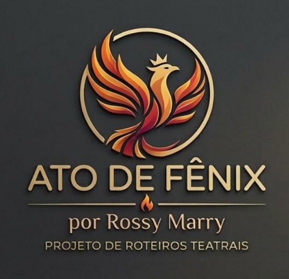

Uma obra teatral que celebra a trajetória de Tina Turner, mostrando sua força, coragem e capacidade de transformar dor em arte.
Feira de Artesanato em Pirituba – SP
Data e Horário: 11 de Abril às 13h
Apoio: Vozes da Passarela
"Eu não carrego mais suas correntes. Rasguei os véus e transformei cada ferida em força. Hoje sou dona do meu destino, da minha vida… e a minha voz ecoa: The Best."
Memórias da juventude, os bastidores e os primeiros conflitos. O início de uma história que moldaria uma lenda.
A representação profunda dos abusos físicos e emocionais, simbolizados artisticamente por correntes, véus brancos e máscaras teatrais.
A explosão de libertação e triunfo. A fênix ressurge das cinzas em um manifesto de empoderamento.
Grupo Tinamarcs & Marcettes
* Um agradecimento especial ao Sr. Diniz, organizador do espaço da Feira de Artesanato em Pirituba.